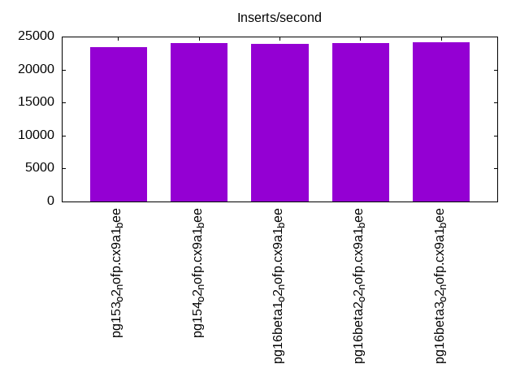

Introduction
This is a report for the insert benchmark with 20M docs and 1 client(s). It is generated by scripts (bash, awk, sed) and Tufte might not be impressed. An overview of the insert benchmark is here and a short update is here. Below, by DBMS, I mean DBMS+version.config. An example is my8020.c10b40 where my means MySQL, 8020 is version 8.0.20 and c10b40 is the name for the configuration file.
The test server has 8 AMD cores, 16G RAM and an NVMe SSD. It is described here as the Beelink. The benchmark was run with 1 client and there were 1 or 3 connections per client (1 for queries or inserts without rate limits, 1+1 for rate limited inserts+deletes). It uses 1 table. It loads 20M rows per table without secondary indexes, creates secondary indexes, then inserts 200M rows per table with a delete per insert to avoid growing the table. It then does 3 read+write tests for 7200s each that do queries as fast as possible with 100, 500 and then 1000 inserts/second/client concurrent with the queries and 1000 deletes/second to avoid growing the table. The database is cached by Postgres. Clients and the DBMS share one server. The per-database configs are in the per-database subdirectories here.
The tested DBMS are:
- pg153_o2_nofp.cx9a1_bee - Postgres 15.3, o2_nofp build that used -O2 -no-omit-frame-pointer, a1 config
- pg154_o2_nofp.cx9a1_bee - Postgres 15.4, o2_nofp build that used -O2 -no-omit-frame-pointer, a1 config
- pg16beta1_o2_nofp.cx9a1_bee - Postgres 16 beta1, o2_nofp build that used -O2 -no-omit-frame-pointer, a1 config
- pg16beta2_o2_nofp.cx9a1_bee - Postgres 16 beta2, o2_nofp build that used -O2 -no-omit-frame-pointer, a1 config
- pg16beta3_o2_nofp.cx9a1_bee - Postgres 16 beta3, o2_nofp build that used -O2 -no-omit-frame-pointer, a1 config
Contents
- Summary
- l.i0: load without secondary indexes
- l.x: create secondary indexes
- l.i1: continue load after secondary indexes created
- q100.1: range queries with 100 insert/s per client
- q500.1: range queries with 500 insert/s per client
- q1000.1: range queries with 1000 insert/s per client
Summary
The numbers are inserts/s for l.i0 and l.i1, indexed docs (or rows) /s for l.x and queries/s for q*.2. The values are the average rate over the entire test for inserts (IPS) and queries (QPS). The range of values for IPS and QPS is split into 3 parts: bottom 25%, middle 50%, top 25%. Values in the bottom 25% have a red background, values in the top 25% have a green background and values in the middle have no color. A gray background is used for values that can be ignored because the DBMS did not sustain the target insert rate. Red backgrounds are not used when the minimum value is within 80% of the max value.
| dbms | l.i0 | l.x | l.i1 | q100.1 | q500.1 | q1000.1 |
|---|---|---|---|---|---|---|
| pg153_o2_nofp.cx9a1_bee | 71174 | 231034 | 23343 | 7973 | 7830 | 8179 |
| pg154_o2_nofp.cx9a1_bee | 71174 | 228409 | 23958 | 8134 | 7936 | 8052 |
| pg16beta1_o2_nofp.cx9a1_bee | 71174 | 239286 | 23880 | 8087 | 8154 | 7890 |
| pg16beta2_o2_nofp.cx9a1_bee | 71174 | 233721 | 24007 | 8540 | 8147 | 8176 |
| pg16beta3_o2_nofp.cx9a1_bee | 72464 | 233721 | 24166 | 8219 | 8383 | 8284 |
This table has relative throughput, throughput for the DBMS relative to the DBMS in the first line, using the absolute throughput from the previous table. Values less than 0.95 have a yellow background. Values greater than 1.05 have a blue background.
| dbms | l.i0 | l.x | l.i1 | q100.1 | q500.1 | q1000.1 |
|---|---|---|---|---|---|---|
| pg153_o2_nofp.cx9a1_bee | 1.00 | 1.00 | 1.00 | 1.00 | 1.00 | 1.00 |
| pg154_o2_nofp.cx9a1_bee | 1.00 | 0.99 | 1.03 | 1.02 | 1.01 | 0.98 |
| pg16beta1_o2_nofp.cx9a1_bee | 1.00 | 1.04 | 1.02 | 1.01 | 1.04 | 0.96 |
| pg16beta2_o2_nofp.cx9a1_bee | 1.00 | 1.01 | 1.03 | 1.07 | 1.04 | 1.00 |
| pg16beta3_o2_nofp.cx9a1_bee | 1.02 | 1.01 | 1.04 | 1.03 | 1.07 | 1.01 |
This lists the average rate of inserts/s for the tests that do inserts concurrent with queries. For such tests the query rate is listed in the table above. The read+write tests are setup so that the insert rate should match the target rate every second. Cells that are not at least 95% of the target have a red background to indicate a failure to satisfy the target.
| dbms | q100.1 | q500.1 | q1000.1 |
|---|---|---|---|
| pg153_o2_nofp.cx9a1_bee | 100 | 499 | 998 |
| pg154_o2_nofp.cx9a1_bee | 100 | 499 | 998 |
| pg16beta1_o2_nofp.cx9a1_bee | 100 | 499 | 997 |
| pg16beta2_o2_nofp.cx9a1_bee | 100 | 499 | 998 |
| pg16beta3_o2_nofp.cx9a1_bee | 100 | 499 | 998 |
| target | 100 | 500 | 1000 |
l.i0
l.i0: load without secondary indexes. Graphs for performance per 1-second interval are here.
Average throughput:
Insert response time histogram: each cell has the percentage of responses that take <= the time in the header and max is the max response time in seconds. For the max column values in the top 25% of the range have a red background and in the bottom 25% of the range have a green background. The red background is not used when the min value is within 80% of the max value.
| dbms | 256us | 1ms | 4ms | 16ms | 64ms | 256ms | 1s | 4s | 16s | gt | max |
|---|---|---|---|---|---|---|---|---|---|---|---|
| pg153_o2_nofp.cx9a1_bee | 100.000 | 0.003 | |||||||||
| pg154_o2_nofp.cx9a1_bee | 100.000 | 0.004 | |||||||||
| pg16beta1_o2_nofp.cx9a1_bee | 100.000 | 0.003 | |||||||||
| pg16beta2_o2_nofp.cx9a1_bee | 100.000 | 0.003 | |||||||||
| pg16beta3_o2_nofp.cx9a1_bee | 99.999 | 0.001 | 0.005 |
Performance metrics for the DBMS listed above. Some are normalized by throughput, others are not. Legend for results is here.
ips qps rps rmbps wps wmbps rpq rkbpq wpi wkbpi csps cpups cspq cpupq dbgb1 dbgb2 rss maxop p50 p99 tag 71174 0 0 0.0 82.0 30.2 0.000 0.000 0.001 0.435 8807 22.2 0.124 25 1.9 5.2 1.5 0.003 71747 64330 20m.pg153_o2_nofp.cx9a1_bee 71174 0 0 0.0 85.0 30.8 0.000 0.000 0.001 0.443 8764 22.7 0.123 26 1.9 5.2 1.9 0.004 71520 69650 20m.pg154_o2_nofp.cx9a1_bee 71174 0 0 0.0 82.9 29.9 0.000 0.000 0.001 0.430 8745 22.3 0.123 25 1.9 5.2 1.5 0.003 71322 69583 20m.pg16beta1_o2_nofp.cx9a1_bee 71174 0 0 0.0 83.0 30.0 0.000 0.000 0.001 0.431 8771 22.5 0.123 25 1.9 5.2 0.2 0.003 71630 69186 20m.pg16beta2_o2_nofp.cx9a1_bee 72464 0 0 0.0 84.9 30.7 0.000 0.000 0.001 0.434 8953 22.5 0.124 25 1.9 5.2 0.2 0.005 73020 71214 20m.pg16beta3_o2_nofp.cx9a1_bee
l.x
l.x: create secondary indexes.
Average throughput:

Performance metrics for the DBMS listed above. Some are normalized by throughput, others are not. Legend for results is here.
ips qps rps rmbps wps wmbps rpq rkbpq wpi wkbpi csps cpups cspq cpupq dbgb1 dbgb2 rss maxop p50 p99 tag 231034 0 0 0.0 88.0 35.0 0.000 0.000 0.000 0.155 700 11.7 0.003 4 3.7 8.0 2.1 0.003 NA NA 20m.pg153_o2_nofp.cx9a1_bee 228409 0 0 0.0 70.7 32.9 0.000 0.000 0.000 0.147 633 11.8 0.003 4 3.7 8.0 2.1 0.003 NA NA 20m.pg154_o2_nofp.cx9a1_bee 239286 0 0 0.0 73.1 33.8 0.000 0.000 0.000 0.145 669 12.2 0.003 4 3.7 8.0 2.1 0.003 NA NA 20m.pg16beta1_o2_nofp.cx9a1_bee 233721 0 0 0.0 82.9 38.3 0.000 0.000 0.000 0.168 648 12.2 0.003 4 3.7 8.0 2.1 0.003 NA NA 20m.pg16beta2_o2_nofp.cx9a1_bee 233721 0 0 0.0 89.8 41.8 0.000 0.000 0.000 0.183 714 12.0 0.003 4 3.7 8.0 2.1 0.003 NA NA 20m.pg16beta3_o2_nofp.cx9a1_bee
l.i1
l.i1: continue load after secondary indexes created. Graphs for performance per 1-second interval are here.
Average throughput:
Insert response time histogram: each cell has the percentage of responses that take <= the time in the header and max is the max response time in seconds. For the max column values in the top 25% of the range have a red background and in the bottom 25% of the range have a green background. The red background is not used when the min value is within 80% of the max value.
| dbms | 256us | 1ms | 4ms | 16ms | 64ms | 256ms | 1s | 4s | 16s | gt | max |
|---|---|---|---|---|---|---|---|---|---|---|---|
| pg153_o2_nofp.cx9a1_bee | 99.990 | 0.010 | nonzero | 0.023 | |||||||
| pg154_o2_nofp.cx9a1_bee | 99.989 | 0.011 | nonzero | 0.021 | |||||||
| pg16beta1_o2_nofp.cx9a1_bee | 99.990 | 0.010 | nonzero | 0.043 | |||||||
| pg16beta2_o2_nofp.cx9a1_bee | 99.986 | 0.014 | nonzero | 0.020 | |||||||
| pg16beta3_o2_nofp.cx9a1_bee | 99.990 | 0.010 | nonzero | 0.038 |
Delete response time histogram: each cell has the percentage of responses that take <= the time in the header and max is the max response time in seconds. For the max column values in the top 25% of the range have a red background and in the bottom 25% of the range have a green background. The red background is not used when the min value is within 80% of the max value.
| dbms | 256us | 1ms | 4ms | 16ms | 64ms | 256ms | 1s | 4s | 16s | gt | max |
|---|---|---|---|---|---|---|---|---|---|---|---|
| pg153_o2_nofp.cx9a1_bee | 0.103 | 84.197 | 7.350 | 8.351 | nonzero | 0.020 | |||||
| pg154_o2_nofp.cx9a1_bee | 0.094 | 84.107 | 9.155 | 6.644 | nonzero | 0.018 | |||||
| pg16beta1_o2_nofp.cx9a1_bee | 0.092 | 83.761 | 8.652 | 7.495 | nonzero | 0.042 | |||||
| pg16beta2_o2_nofp.cx9a1_bee | 0.090 | 83.903 | 8.805 | 7.202 | nonzero | 0.018 | |||||
| pg16beta3_o2_nofp.cx9a1_bee | 0.109 | 84.186 | 8.183 | 7.522 | nonzero | 0.019 |
Performance metrics for the DBMS listed above. Some are normalized by throughput, others are not. Legend for results is here.
ips qps rps rmbps wps wmbps rpq rkbpq wpi wkbpi csps cpups cspq cpupq dbgb1 dbgb2 rss maxop p50 p99 tag 23343 0 0 0.0 69.0 19.0 0.000 0.000 0.003 0.833 11165 23.4 0.478 80 5.1 45.1 5.1 0.023 29267 5796 20m.pg153_o2_nofp.cx9a1_bee 23958 0 0 0.0 68.9 19.5 0.000 0.000 0.003 0.832 11459 23.6 0.478 79 5.1 45.1 5.1 0.021 29017 5943 20m.pg154_o2_nofp.cx9a1_bee 23880 0 0 0.0 68.6 19.4 0.000 0.000 0.003 0.833 11498 23.6 0.481 79 5.1 45.1 5.0 0.043 29219 5893 20m.pg16beta1_o2_nofp.cx9a1_bee 24007 0 0 0.0 68.2 19.3 0.000 0.000 0.003 0.825 11545 23.6 0.481 79 5.1 45.1 4.9 0.020 29127 9889 20m.pg16beta2_o2_nofp.cx9a1_bee 24166 0 0 0.0 68.5 19.5 0.000 0.000 0.003 0.824 11611 23.7 0.480 78 5.1 45.1 5.2 0.038 29379 9939 20m.pg16beta3_o2_nofp.cx9a1_bee
q100.1
q100.1: range queries with 100 insert/s per client. Graphs for performance per 1-second interval are here.
Average throughput:
Query response time histogram: each cell has the percentage of responses that take <= the time in the header and max is the max response time in seconds. For max values in the top 25% of the range have a red background and in the bottom 25% of the range have a green background. The red background is not used when the min value is within 80% of the max value.
| dbms | 256us | 1ms | 4ms | 16ms | 64ms | 256ms | 1s | 4s | 16s | gt | max |
|---|---|---|---|---|---|---|---|---|---|---|---|
| pg153_o2_nofp.cx9a1_bee | 99.901 | 0.098 | nonzero | nonzero | 0.004 | ||||||
| pg154_o2_nofp.cx9a1_bee | 99.919 | 0.081 | nonzero | 0.004 | |||||||
| pg16beta1_o2_nofp.cx9a1_bee | 99.917 | 0.083 | nonzero | nonzero | 0.004 | ||||||
| pg16beta2_o2_nofp.cx9a1_bee | 99.947 | 0.052 | nonzero | 0.004 | |||||||
| pg16beta3_o2_nofp.cx9a1_bee | 99.920 | 0.080 | nonzero | nonzero | 0.004 |
Insert response time histogram: each cell has the percentage of responses that take <= the time in the header and max is the max response time in seconds. For max values in the top 25% of the range have a red background and in the bottom 25% of the range have a green background. The red background is not used when the min value is within 80% of the max value.
| dbms | 256us | 1ms | 4ms | 16ms | 64ms | 256ms | 1s | 4s | 16s | gt | max |
|---|---|---|---|---|---|---|---|---|---|---|---|
| pg153_o2_nofp.cx9a1_bee | 80.528 | 19.472 | 0.006 | ||||||||
| pg154_o2_nofp.cx9a1_bee | 82.597 | 17.403 | 0.006 | ||||||||
| pg16beta1_o2_nofp.cx9a1_bee | 82.194 | 17.806 | 0.006 | ||||||||
| pg16beta2_o2_nofp.cx9a1_bee | 65.306 | 34.694 | 0.006 | ||||||||
| pg16beta3_o2_nofp.cx9a1_bee | 68.333 | 31.667 | 0.007 |
Delete response time histogram: each cell has the percentage of responses that take <= the time in the header and max is the max response time in seconds. For max values in the top 25% of the range have a red background and in the bottom 25% of the range have a green background. The red background is not used when the min value is within 80% of the max value.
| dbms | 256us | 1ms | 4ms | 16ms | 64ms | 256ms | 1s | 4s | 16s | gt | max |
|---|---|---|---|---|---|---|---|---|---|---|---|
| pg153_o2_nofp.cx9a1_bee | 2.278 | 58.472 | 33.792 | 5.458 | 0.009 | ||||||
| pg154_o2_nofp.cx9a1_bee | 0.722 | 99.236 | 0.042 | 0.004 | |||||||
| pg16beta1_o2_nofp.cx9a1_bee | 1.250 | 98.722 | 0.028 | 0.002 | |||||||
| pg16beta2_o2_nofp.cx9a1_bee | 0.042 | 44.819 | 55.125 | 0.014 | 0.005 | ||||||
| pg16beta3_o2_nofp.cx9a1_bee | 0.917 | 53.708 | 39.097 | 6.278 | 0.009 |
Performance metrics for the DBMS listed above. Some are normalized by throughput, others are not. Legend for results is here.
ips qps rps rmbps wps wmbps rpq rkbpq wpi wkbpi csps cpups cspq cpupq dbgb1 dbgb2 rss maxop p50 p99 tag 100 7973 0 0.0 41.3 2.1 0.000 0.000 0.415 21.380 30710 12.8 3.852 128 5.1 45.1 3.3 0.004 7592 7431 20m.pg153_o2_nofp.cx9a1_bee 100 8134 0 0.0 39.8 2.0 0.000 0.000 0.399 20.923 31318 12.7 3.850 125 5.1 45.1 3.3 0.004 7616 7445 20m.pg154_o2_nofp.cx9a1_bee 100 8087 0 0.0 40.0 2.1 0.000 0.000 0.401 21.167 31130 12.6 3.849 125 5.1 45.1 3.3 0.004 7655 7480 20m.pg16beta1_o2_nofp.cx9a1_bee 100 8540 0 0.0 40.6 2.3 0.000 0.000 0.408 23.920 32910 12.6 3.854 118 5.1 44.9 2.9 0.004 8276 7462 20m.pg16beta2_o2_nofp.cx9a1_bee 100 8219 0 0.0 40.7 2.3 0.000 0.000 0.408 23.931 31626 12.6 3.848 123 5.1 44.9 3.2 0.004 7702 7510 20m.pg16beta3_o2_nofp.cx9a1_bee
q500.1
q500.1: range queries with 500 insert/s per client. Graphs for performance per 1-second interval are here.
Average throughput:
Query response time histogram: each cell has the percentage of responses that take <= the time in the header and max is the max response time in seconds. For max values in the top 25% of the range have a red background and in the bottom 25% of the range have a green background. The red background is not used when the min value is within 80% of the max value.
| dbms | 256us | 1ms | 4ms | 16ms | 64ms | 256ms | 1s | 4s | 16s | gt | max |
|---|---|---|---|---|---|---|---|---|---|---|---|
| pg153_o2_nofp.cx9a1_bee | 99.929 | 0.071 | nonzero | nonzero | 0.012 | ||||||
| pg154_o2_nofp.cx9a1_bee | 99.928 | 0.072 | nonzero | 0.003 | |||||||
| pg16beta1_o2_nofp.cx9a1_bee | 99.931 | 0.069 | nonzero | 0.003 | |||||||
| pg16beta2_o2_nofp.cx9a1_bee | 99.933 | 0.067 | nonzero | nonzero | 0.005 | ||||||
| pg16beta3_o2_nofp.cx9a1_bee | 99.938 | 0.062 | nonzero | 0.003 |
Insert response time histogram: each cell has the percentage of responses that take <= the time in the header and max is the max response time in seconds. For max values in the top 25% of the range have a red background and in the bottom 25% of the range have a green background. The red background is not used when the min value is within 80% of the max value.
| dbms | 256us | 1ms | 4ms | 16ms | 64ms | 256ms | 1s | 4s | 16s | gt | max |
|---|---|---|---|---|---|---|---|---|---|---|---|
| pg153_o2_nofp.cx9a1_bee | 91.106 | 8.894 | 0.008 | ||||||||
| pg154_o2_nofp.cx9a1_bee | 91.353 | 8.647 | 0.011 | ||||||||
| pg16beta1_o2_nofp.cx9a1_bee | 91.081 | 8.919 | 0.008 | ||||||||
| pg16beta2_o2_nofp.cx9a1_bee | 93.072 | 6.928 | 0.012 | ||||||||
| pg16beta3_o2_nofp.cx9a1_bee | 93.331 | 6.669 | 0.008 |
Delete response time histogram: each cell has the percentage of responses that take <= the time in the header and max is the max response time in seconds. For max values in the top 25% of the range have a red background and in the bottom 25% of the range have a green background. The red background is not used when the min value is within 80% of the max value.
| dbms | 256us | 1ms | 4ms | 16ms | 64ms | 256ms | 1s | 4s | 16s | gt | max |
|---|---|---|---|---|---|---|---|---|---|---|---|
| pg153_o2_nofp.cx9a1_bee | 4.133 | 83.497 | 8.439 | 3.919 | 0.011 | 0.018 | |||||
| pg154_o2_nofp.cx9a1_bee | 3.528 | 76.100 | 0.139 | 20.233 | 0.015 | ||||||
| pg16beta1_o2_nofp.cx9a1_bee | 2.514 | 75.017 | 0.100 | 22.369 | 0.014 | ||||||
| pg16beta2_o2_nofp.cx9a1_bee | 2.639 | 74.378 | 0.081 | 22.903 | 0.012 | ||||||
| pg16beta3_o2_nofp.cx9a1_bee | 3.722 | 88.036 | 6.603 | 1.633 | 0.006 | 0.018 |
Performance metrics for the DBMS listed above. Some are normalized by throughput, others are not. Legend for results is here.
ips qps rps rmbps wps wmbps rpq rkbpq wpi wkbpi csps cpups cspq cpupq dbgb1 dbgb2 rss maxop p50 p99 tag 499 7830 0 0.0 42.4 2.4 0.000 0.000 0.085 4.977 30263 13.1 3.865 134 5.1 42.8 2.0 0.012 7526 7383 20m.pg153_o2_nofp.cx9a1_bee 499 7936 0 0.0 41.2 2.4 0.000 0.000 0.083 4.878 30661 13.2 3.864 133 5.1 42.7 2.0 0.003 7544 7383 20m.pg154_o2_nofp.cx9a1_bee 499 8154 0 0.0 41.1 2.4 0.000 0.000 0.082 4.912 31512 13.0 3.865 128 5.1 42.7 1.9 0.003 7571 7336 20m.pg16beta1_o2_nofp.cx9a1_bee 499 8147 0 0.0 26.3 2.5 0.000 0.000 0.053 5.156 31488 13.0 3.865 128 5.1 42.4 0.2 0.005 7576 7368 20m.pg16beta2_o2_nofp.cx9a1_bee 499 8383 0 0.0 38.7 2.4 0.000 0.000 0.077 4.877 32394 12.8 3.864 122 5.1 42.5 5.2 0.003 7766 7544 20m.pg16beta3_o2_nofp.cx9a1_bee
q1000.1
q1000.1: range queries with 1000 insert/s per client. Graphs for performance per 1-second interval are here.
Average throughput:
Query response time histogram: each cell has the percentage of responses that take <= the time in the header and max is the max response time in seconds. For max values in the top 25% of the range have a red background and in the bottom 25% of the range have a green background. The red background is not used when the min value is within 80% of the max value.
| dbms | 256us | 1ms | 4ms | 16ms | 64ms | 256ms | 1s | 4s | 16s | gt | max |
|---|---|---|---|---|---|---|---|---|---|---|---|
| pg153_o2_nofp.cx9a1_bee | 99.937 | 0.062 | nonzero | 0.003 | |||||||
| pg154_o2_nofp.cx9a1_bee | 99.933 | 0.066 | nonzero | nonzero | nonzero | 0.020 | |||||
| pg16beta1_o2_nofp.cx9a1_bee | 99.926 | 0.074 | nonzero | 0.004 | |||||||
| pg16beta2_o2_nofp.cx9a1_bee | 99.938 | 0.062 | nonzero | nonzero | 0.005 | ||||||
| pg16beta3_o2_nofp.cx9a1_bee | 99.945 | 0.055 | nonzero | nonzero | 0.004 |
Insert response time histogram: each cell has the percentage of responses that take <= the time in the header and max is the max response time in seconds. For max values in the top 25% of the range have a red background and in the bottom 25% of the range have a green background. The red background is not used when the min value is within 80% of the max value.
| dbms | 256us | 1ms | 4ms | 16ms | 64ms | 256ms | 1s | 4s | 16s | gt | max |
|---|---|---|---|---|---|---|---|---|---|---|---|
| pg153_o2_nofp.cx9a1_bee | 96.622 | 3.378 | 0.007 | ||||||||
| pg154_o2_nofp.cx9a1_bee | 96.128 | 3.867 | 0.006 | 0.024 | |||||||
| pg16beta1_o2_nofp.cx9a1_bee | 95.837 | 4.163 | 0.009 | ||||||||
| pg16beta2_o2_nofp.cx9a1_bee | 96.692 | 3.308 | 0.006 | ||||||||
| pg16beta3_o2_nofp.cx9a1_bee | 96.414 | 3.586 | 0.006 |
Delete response time histogram: each cell has the percentage of responses that take <= the time in the header and max is the max response time in seconds. For max values in the top 25% of the range have a red background and in the bottom 25% of the range have a green background. The red background is not used when the min value is within 80% of the max value.
| dbms | 256us | 1ms | 4ms | 16ms | 64ms | 256ms | 1s | 4s | 16s | gt | max |
|---|---|---|---|---|---|---|---|---|---|---|---|
| pg153_o2_nofp.cx9a1_bee | 2.175 | 79.757 | 18.057 | 0.011 | 0.005 | ||||||
| pg154_o2_nofp.cx9a1_bee | 2.306 | 76.794 | 0.144 | 20.750 | 0.006 | 0.021 | |||||
| pg16beta1_o2_nofp.cx9a1_bee | 1.565 | 75.749 | 2.113 | 20.574 | 0.010 | ||||||
| pg16beta2_o2_nofp.cx9a1_bee | 1.942 | 80.885 | 0.124 | 17.050 | 0.013 | ||||||
| pg16beta3_o2_nofp.cx9a1_bee | 2.060 | 80.892 | 7.604 | 9.444 | 0.014 |
Performance metrics for the DBMS listed above. Some are normalized by throughput, others are not. Legend for results is here.
ips qps rps rmbps wps wmbps rpq rkbpq wpi wkbpi csps cpups cspq cpupq dbgb1 dbgb2 rss maxop p50 p99 tag 998 8179 0 0.0 26.5 2.8 0.000 0.000 0.027 2.919 31804 13.7 3.889 134 5.1 39.3 5.1 0.003 7605 7368 20m.pg153_o2_nofp.cx9a1_bee 998 8052 0 0.0 24.8 2.9 0.000 0.000 0.025 3.025 31329 14.0 3.891 139 5.1 39.3 1.5 0.020 7525 7308 20m.pg154_o2_nofp.cx9a1_bee 997 7890 0 0.0 24.4 3.0 0.000 0.000 0.024 3.041 30734 13.9 3.895 141 5.1 39.4 3.6 0.004 7550 7401 20m.pg16beta1_o2_nofp.cx9a1_bee 998 8176 0 0.0 23.6 2.9 0.000 0.000 0.024 2.985 31820 13.9 3.892 136 5.1 38.9 4.9 0.005 7591 7368 20m.pg16beta2_o2_nofp.cx9a1_bee 998 8284 0 0.0 24.3 2.9 0.000 0.000 0.024 2.939 32205 13.7 3.888 132 5.1 39.1 2.5 0.004 7706 7496 20m.pg16beta3_o2_nofp.cx9a1_bee
l.i0
l.i0: load without secondary indexes
Performance metrics for all DBMS, not just the ones listed above. Some are normalized by throughput, others are not. Legend for results is here.
ips qps rps rmbps wps wmbps rpq rkbpq wpi wkbpi csps cpups cspq cpupq dbgb1 dbgb2 rss maxop p50 p99 tag 71174 0 0 0.0 82.0 30.2 0.000 0.000 0.001 0.435 8807 22.2 0.124 25 1.9 5.2 1.5 0.003 71747 64330 20m.pg153_o2_nofp.cx9a1_bee 71174 0 0 0.0 85.0 30.8 0.000 0.000 0.001 0.443 8764 22.7 0.123 26 1.9 5.2 1.9 0.004 71520 69650 20m.pg154_o2_nofp.cx9a1_bee 71174 0 0 0.0 82.9 29.9 0.000 0.000 0.001 0.430 8745 22.3 0.123 25 1.9 5.2 1.5 0.003 71322 69583 20m.pg16beta1_o2_nofp.cx9a1_bee 71174 0 0 0.0 83.0 30.0 0.000 0.000 0.001 0.431 8771 22.5 0.123 25 1.9 5.2 0.2 0.003 71630 69186 20m.pg16beta2_o2_nofp.cx9a1_bee 72464 0 0 0.0 84.9 30.7 0.000 0.000 0.001 0.434 8953 22.5 0.124 25 1.9 5.2 0.2 0.005 73020 71214 20m.pg16beta3_o2_nofp.cx9a1_bee
l.x
l.x: create secondary indexes
Performance metrics for all DBMS, not just the ones listed above. Some are normalized by throughput, others are not. Legend for results is here.
ips qps rps rmbps wps wmbps rpq rkbpq wpi wkbpi csps cpups cspq cpupq dbgb1 dbgb2 rss maxop p50 p99 tag 231034 0 0 0.0 88.0 35.0 0.000 0.000 0.000 0.155 700 11.7 0.003 4 3.7 8.0 2.1 0.003 NA NA 20m.pg153_o2_nofp.cx9a1_bee 228409 0 0 0.0 70.7 32.9 0.000 0.000 0.000 0.147 633 11.8 0.003 4 3.7 8.0 2.1 0.003 NA NA 20m.pg154_o2_nofp.cx9a1_bee 239286 0 0 0.0 73.1 33.8 0.000 0.000 0.000 0.145 669 12.2 0.003 4 3.7 8.0 2.1 0.003 NA NA 20m.pg16beta1_o2_nofp.cx9a1_bee 233721 0 0 0.0 82.9 38.3 0.000 0.000 0.000 0.168 648 12.2 0.003 4 3.7 8.0 2.1 0.003 NA NA 20m.pg16beta2_o2_nofp.cx9a1_bee 233721 0 0 0.0 89.8 41.8 0.000 0.000 0.000 0.183 714 12.0 0.003 4 3.7 8.0 2.1 0.003 NA NA 20m.pg16beta3_o2_nofp.cx9a1_bee
l.i1
l.i1: continue load after secondary indexes created
Performance metrics for all DBMS, not just the ones listed above. Some are normalized by throughput, others are not. Legend for results is here.
ips qps rps rmbps wps wmbps rpq rkbpq wpi wkbpi csps cpups cspq cpupq dbgb1 dbgb2 rss maxop p50 p99 tag 23343 0 0 0.0 69.0 19.0 0.000 0.000 0.003 0.833 11165 23.4 0.478 80 5.1 45.1 5.1 0.023 29267 5796 20m.pg153_o2_nofp.cx9a1_bee 23958 0 0 0.0 68.9 19.5 0.000 0.000 0.003 0.832 11459 23.6 0.478 79 5.1 45.1 5.1 0.021 29017 5943 20m.pg154_o2_nofp.cx9a1_bee 23880 0 0 0.0 68.6 19.4 0.000 0.000 0.003 0.833 11498 23.6 0.481 79 5.1 45.1 5.0 0.043 29219 5893 20m.pg16beta1_o2_nofp.cx9a1_bee 24007 0 0 0.0 68.2 19.3 0.000 0.000 0.003 0.825 11545 23.6 0.481 79 5.1 45.1 4.9 0.020 29127 9889 20m.pg16beta2_o2_nofp.cx9a1_bee 24166 0 0 0.0 68.5 19.5 0.000 0.000 0.003 0.824 11611 23.7 0.480 78 5.1 45.1 5.2 0.038 29379 9939 20m.pg16beta3_o2_nofp.cx9a1_bee
q100.1
q100.1: range queries with 100 insert/s per client
Performance metrics for all DBMS, not just the ones listed above. Some are normalized by throughput, others are not. Legend for results is here.
ips qps rps rmbps wps wmbps rpq rkbpq wpi wkbpi csps cpups cspq cpupq dbgb1 dbgb2 rss maxop p50 p99 tag 100 7973 0 0.0 41.3 2.1 0.000 0.000 0.415 21.380 30710 12.8 3.852 128 5.1 45.1 3.3 0.004 7592 7431 20m.pg153_o2_nofp.cx9a1_bee 100 8134 0 0.0 39.8 2.0 0.000 0.000 0.399 20.923 31318 12.7 3.850 125 5.1 45.1 3.3 0.004 7616 7445 20m.pg154_o2_nofp.cx9a1_bee 100 8087 0 0.0 40.0 2.1 0.000 0.000 0.401 21.167 31130 12.6 3.849 125 5.1 45.1 3.3 0.004 7655 7480 20m.pg16beta1_o2_nofp.cx9a1_bee 100 8540 0 0.0 40.6 2.3 0.000 0.000 0.408 23.920 32910 12.6 3.854 118 5.1 44.9 2.9 0.004 8276 7462 20m.pg16beta2_o2_nofp.cx9a1_bee 100 8219 0 0.0 40.7 2.3 0.000 0.000 0.408 23.931 31626 12.6 3.848 123 5.1 44.9 3.2 0.004 7702 7510 20m.pg16beta3_o2_nofp.cx9a1_bee
q500.1
q500.1: range queries with 500 insert/s per client
Performance metrics for all DBMS, not just the ones listed above. Some are normalized by throughput, others are not. Legend for results is here.
ips qps rps rmbps wps wmbps rpq rkbpq wpi wkbpi csps cpups cspq cpupq dbgb1 dbgb2 rss maxop p50 p99 tag 499 7830 0 0.0 42.4 2.4 0.000 0.000 0.085 4.977 30263 13.1 3.865 134 5.1 42.8 2.0 0.012 7526 7383 20m.pg153_o2_nofp.cx9a1_bee 499 7936 0 0.0 41.2 2.4 0.000 0.000 0.083 4.878 30661 13.2 3.864 133 5.1 42.7 2.0 0.003 7544 7383 20m.pg154_o2_nofp.cx9a1_bee 499 8154 0 0.0 41.1 2.4 0.000 0.000 0.082 4.912 31512 13.0 3.865 128 5.1 42.7 1.9 0.003 7571 7336 20m.pg16beta1_o2_nofp.cx9a1_bee 499 8147 0 0.0 26.3 2.5 0.000 0.000 0.053 5.156 31488 13.0 3.865 128 5.1 42.4 0.2 0.005 7576 7368 20m.pg16beta2_o2_nofp.cx9a1_bee 499 8383 0 0.0 38.7 2.4 0.000 0.000 0.077 4.877 32394 12.8 3.864 122 5.1 42.5 5.2 0.003 7766 7544 20m.pg16beta3_o2_nofp.cx9a1_bee
q1000.1
q1000.1: range queries with 1000 insert/s per client
Performance metrics for all DBMS, not just the ones listed above. Some are normalized by throughput, others are not. Legend for results is here.
ips qps rps rmbps wps wmbps rpq rkbpq wpi wkbpi csps cpups cspq cpupq dbgb1 dbgb2 rss maxop p50 p99 tag 998 8179 0 0.0 26.5 2.8 0.000 0.000 0.027 2.919 31804 13.7 3.889 134 5.1 39.3 5.1 0.003 7605 7368 20m.pg153_o2_nofp.cx9a1_bee 998 8052 0 0.0 24.8 2.9 0.000 0.000 0.025 3.025 31329 14.0 3.891 139 5.1 39.3 1.5 0.020 7525 7308 20m.pg154_o2_nofp.cx9a1_bee 997 7890 0 0.0 24.4 3.0 0.000 0.000 0.024 3.041 30734 13.9 3.895 141 5.1 39.4 3.6 0.004 7550 7401 20m.pg16beta1_o2_nofp.cx9a1_bee 998 8176 0 0.0 23.6 2.9 0.000 0.000 0.024 2.985 31820 13.9 3.892 136 5.1 38.9 4.9 0.005 7591 7368 20m.pg16beta2_o2_nofp.cx9a1_bee 998 8284 0 0.0 24.3 2.9 0.000 0.000 0.024 2.939 32205 13.7 3.888 132 5.1 39.1 2.5 0.004 7706 7496 20m.pg16beta3_o2_nofp.cx9a1_bee
l.i0
- l.i0: load without secondary indexes
- Legend for results is here.
- Each entry lists the percentage of responses that fit in that bucket (slower than max time for previous bucket, faster than min time for next bucket).
Insert response time histogram
256us 1ms 4ms 16ms 64ms 256ms 1s 4s 16s gt max tag 0.000 0.000 100.000 0.000 0.000 0.000 0.000 0.000 0.000 0.000 0.003 pg153_o2_nofp.cx9a1_bee 0.000 0.000 100.000 0.000 0.000 0.000 0.000 0.000 0.000 0.000 0.004 pg154_o2_nofp.cx9a1_bee 0.000 0.000 100.000 0.000 0.000 0.000 0.000 0.000 0.000 0.000 0.003 pg16beta1_o2_nofp.cx9a1_bee 0.000 0.000 100.000 0.000 0.000 0.000 0.000 0.000 0.000 0.000 0.003 pg16beta2_o2_nofp.cx9a1_bee 0.000 0.000 99.999 0.001 0.000 0.000 0.000 0.000 0.000 0.000 0.005 pg16beta3_o2_nofp.cx9a1_bee
l.x
- l.x: create secondary indexes
- Legend for results is here.
- Each entry lists the percentage of responses that fit in that bucket (slower than max time for previous bucket, faster than min time for next bucket).
TODO - determine whether there is data for create index response time
l.i1
- l.i1: continue load after secondary indexes created
- Legend for results is here.
- Each entry lists the percentage of responses that fit in that bucket (slower than max time for previous bucket, faster than min time for next bucket).
Insert response time histogram
256us 1ms 4ms 16ms 64ms 256ms 1s 4s 16s gt max tag 0.000 0.000 99.990 0.010 nonzero 0.000 0.000 0.000 0.000 0.000 0.023 pg153_o2_nofp.cx9a1_bee 0.000 0.000 99.989 0.011 nonzero 0.000 0.000 0.000 0.000 0.000 0.021 pg154_o2_nofp.cx9a1_bee 0.000 0.000 99.990 0.010 nonzero 0.000 0.000 0.000 0.000 0.000 0.043 pg16beta1_o2_nofp.cx9a1_bee 0.000 0.000 99.986 0.014 nonzero 0.000 0.000 0.000 0.000 0.000 0.020 pg16beta2_o2_nofp.cx9a1_bee 0.000 0.000 99.990 0.010 nonzero 0.000 0.000 0.000 0.000 0.000 0.038 pg16beta3_o2_nofp.cx9a1_bee
Delete response time histogram
256us 1ms 4ms 16ms 64ms 256ms 1s 4s 16s gt max tag 0.103 84.197 7.350 8.351 nonzero 0.000 0.000 0.000 0.000 0.000 0.020 pg153_o2_nofp.cx9a1_bee 0.094 84.107 9.155 6.644 nonzero 0.000 0.000 0.000 0.000 0.000 0.018 pg154_o2_nofp.cx9a1_bee 0.092 83.761 8.652 7.495 nonzero 0.000 0.000 0.000 0.000 0.000 0.042 pg16beta1_o2_nofp.cx9a1_bee 0.090 83.903 8.805 7.202 nonzero 0.000 0.000 0.000 0.000 0.000 0.018 pg16beta2_o2_nofp.cx9a1_bee 0.109 84.186 8.183 7.522 nonzero 0.000 0.000 0.000 0.000 0.000 0.019 pg16beta3_o2_nofp.cx9a1_bee
q100.1
- q100.1: range queries with 100 insert/s per client
- Legend for results is here.
- Each entry lists the percentage of responses that fit in that bucket (slower than max time for previous bucket, faster than min time for next bucket).
Query response time histogram
256us 1ms 4ms 16ms 64ms 256ms 1s 4s 16s gt max tag 99.901 0.098 nonzero nonzero 0.000 0.000 0.000 0.000 0.000 0.000 0.004 pg153_o2_nofp.cx9a1_bee 99.919 0.081 nonzero 0.000 0.000 0.000 0.000 0.000 0.000 0.000 0.004 pg154_o2_nofp.cx9a1_bee 99.917 0.083 nonzero nonzero 0.000 0.000 0.000 0.000 0.000 0.000 0.004 pg16beta1_o2_nofp.cx9a1_bee 99.947 0.052 nonzero 0.000 0.000 0.000 0.000 0.000 0.000 0.000 0.004 pg16beta2_o2_nofp.cx9a1_bee 99.920 0.080 nonzero nonzero 0.000 0.000 0.000 0.000 0.000 0.000 0.004 pg16beta3_o2_nofp.cx9a1_bee
Insert response time histogram
256us 1ms 4ms 16ms 64ms 256ms 1s 4s 16s gt max tag 0.000 0.000 80.528 19.472 0.000 0.000 0.000 0.000 0.000 0.000 0.006 pg153_o2_nofp.cx9a1_bee 0.000 0.000 82.597 17.403 0.000 0.000 0.000 0.000 0.000 0.000 0.006 pg154_o2_nofp.cx9a1_bee 0.000 0.000 82.194 17.806 0.000 0.000 0.000 0.000 0.000 0.000 0.006 pg16beta1_o2_nofp.cx9a1_bee 0.000 0.000 65.306 34.694 0.000 0.000 0.000 0.000 0.000 0.000 0.006 pg16beta2_o2_nofp.cx9a1_bee 0.000 0.000 68.333 31.667 0.000 0.000 0.000 0.000 0.000 0.000 0.007 pg16beta3_o2_nofp.cx9a1_bee
Delete response time histogram
256us 1ms 4ms 16ms 64ms 256ms 1s 4s 16s gt max tag 2.278 58.472 33.792 5.458 0.000 0.000 0.000 0.000 0.000 0.000 0.009 pg153_o2_nofp.cx9a1_bee 0.722 99.236 0.042 0.000 0.000 0.000 0.000 0.000 0.000 0.000 0.004 pg154_o2_nofp.cx9a1_bee 1.250 98.722 0.028 0.000 0.000 0.000 0.000 0.000 0.000 0.000 0.002 pg16beta1_o2_nofp.cx9a1_bee 0.042 44.819 55.125 0.014 0.000 0.000 0.000 0.000 0.000 0.000 0.005 pg16beta2_o2_nofp.cx9a1_bee 0.917 53.708 39.097 6.278 0.000 0.000 0.000 0.000 0.000 0.000 0.009 pg16beta3_o2_nofp.cx9a1_bee
q500.1
- q500.1: range queries with 500 insert/s per client
- Legend for results is here.
- Each entry lists the percentage of responses that fit in that bucket (slower than max time for previous bucket, faster than min time for next bucket).
Query response time histogram
256us 1ms 4ms 16ms 64ms 256ms 1s 4s 16s gt max tag 99.929 0.071 nonzero nonzero 0.000 0.000 0.000 0.000 0.000 0.000 0.012 pg153_o2_nofp.cx9a1_bee 99.928 0.072 nonzero 0.000 0.000 0.000 0.000 0.000 0.000 0.000 0.003 pg154_o2_nofp.cx9a1_bee 99.931 0.069 nonzero 0.000 0.000 0.000 0.000 0.000 0.000 0.000 0.003 pg16beta1_o2_nofp.cx9a1_bee 99.933 0.067 nonzero nonzero 0.000 0.000 0.000 0.000 0.000 0.000 0.005 pg16beta2_o2_nofp.cx9a1_bee 99.938 0.062 nonzero 0.000 0.000 0.000 0.000 0.000 0.000 0.000 0.003 pg16beta3_o2_nofp.cx9a1_bee
Insert response time histogram
256us 1ms 4ms 16ms 64ms 256ms 1s 4s 16s gt max tag 0.000 0.000 91.106 8.894 0.000 0.000 0.000 0.000 0.000 0.000 0.008 pg153_o2_nofp.cx9a1_bee 0.000 0.000 91.353 8.647 0.000 0.000 0.000 0.000 0.000 0.000 0.011 pg154_o2_nofp.cx9a1_bee 0.000 0.000 91.081 8.919 0.000 0.000 0.000 0.000 0.000 0.000 0.008 pg16beta1_o2_nofp.cx9a1_bee 0.000 0.000 93.072 6.928 0.000 0.000 0.000 0.000 0.000 0.000 0.012 pg16beta2_o2_nofp.cx9a1_bee 0.000 0.000 93.331 6.669 0.000 0.000 0.000 0.000 0.000 0.000 0.008 pg16beta3_o2_nofp.cx9a1_bee
Delete response time histogram
256us 1ms 4ms 16ms 64ms 256ms 1s 4s 16s gt max tag 4.133 83.497 8.439 3.919 0.011 0.000 0.000 0.000 0.000 0.000 0.018 pg153_o2_nofp.cx9a1_bee 3.528 76.100 0.139 20.233 0.000 0.000 0.000 0.000 0.000 0.000 0.015 pg154_o2_nofp.cx9a1_bee 2.514 75.017 0.100 22.369 0.000 0.000 0.000 0.000 0.000 0.000 0.014 pg16beta1_o2_nofp.cx9a1_bee 2.639 74.378 0.081 22.903 0.000 0.000 0.000 0.000 0.000 0.000 0.012 pg16beta2_o2_nofp.cx9a1_bee 3.722 88.036 6.603 1.633 0.006 0.000 0.000 0.000 0.000 0.000 0.018 pg16beta3_o2_nofp.cx9a1_bee
q1000.1
- q1000.1: range queries with 1000 insert/s per client
- Legend for results is here.
- Each entry lists the percentage of responses that fit in that bucket (slower than max time for previous bucket, faster than min time for next bucket).
Query response time histogram
256us 1ms 4ms 16ms 64ms 256ms 1s 4s 16s gt max tag 99.937 0.062 nonzero 0.000 0.000 0.000 0.000 0.000 0.000 0.000 0.003 pg153_o2_nofp.cx9a1_bee 99.933 0.066 nonzero nonzero nonzero 0.000 0.000 0.000 0.000 0.000 0.020 pg154_o2_nofp.cx9a1_bee 99.926 0.074 nonzero 0.000 0.000 0.000 0.000 0.000 0.000 0.000 0.004 pg16beta1_o2_nofp.cx9a1_bee 99.938 0.062 nonzero nonzero 0.000 0.000 0.000 0.000 0.000 0.000 0.005 pg16beta2_o2_nofp.cx9a1_bee 99.945 0.055 nonzero nonzero 0.000 0.000 0.000 0.000 0.000 0.000 0.004 pg16beta3_o2_nofp.cx9a1_bee
Insert response time histogram
256us 1ms 4ms 16ms 64ms 256ms 1s 4s 16s gt max tag 0.000 0.000 96.622 3.378 0.000 0.000 0.000 0.000 0.000 0.000 0.007 pg153_o2_nofp.cx9a1_bee 0.000 0.000 96.128 3.867 0.006 0.000 0.000 0.000 0.000 0.000 0.024 pg154_o2_nofp.cx9a1_bee 0.000 0.000 95.837 4.163 0.000 0.000 0.000 0.000 0.000 0.000 0.009 pg16beta1_o2_nofp.cx9a1_bee 0.000 0.000 96.692 3.308 0.000 0.000 0.000 0.000 0.000 0.000 0.006 pg16beta2_o2_nofp.cx9a1_bee 0.000 0.000 96.414 3.586 0.000 0.000 0.000 0.000 0.000 0.000 0.006 pg16beta3_o2_nofp.cx9a1_bee
Delete response time histogram
256us 1ms 4ms 16ms 64ms 256ms 1s 4s 16s gt max tag 2.175 79.757 18.057 0.011 0.000 0.000 0.000 0.000 0.000 0.000 0.005 pg153_o2_nofp.cx9a1_bee 2.306 76.794 0.144 20.750 0.006 0.000 0.000 0.000 0.000 0.000 0.021 pg154_o2_nofp.cx9a1_bee 1.565 75.749 2.113 20.574 0.000 0.000 0.000 0.000 0.000 0.000 0.010 pg16beta1_o2_nofp.cx9a1_bee 1.942 80.885 0.124 17.050 0.000 0.000 0.000 0.000 0.000 0.000 0.013 pg16beta2_o2_nofp.cx9a1_bee 2.060 80.892 7.604 9.444 0.000 0.000 0.000 0.000 0.000 0.000 0.014 pg16beta3_o2_nofp.cx9a1_bee